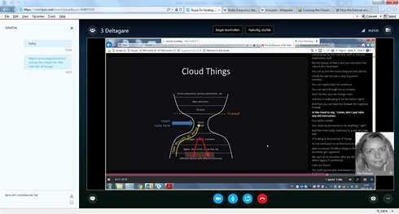

January 2017
Humanity strikes back at @realDonaldTrump. Join the #WorldToTrump open letter that’s sweeping the planet! #Trump secure.avaaz.org/campaign/en/pr…
I just learned about pandas.melt in this nice blog post “Reshaping Data in Python” by Robin Linderborg hackernoon.com/reshaping-data…
Interesting. Capish have over the years advocated their own, patented, "Holon Graph". PhUSE paper to read phusewiki.org/docs/Conferenc… twitter.com/CMWallberg/sta…
Tips from #CADEC2017 for updating my knowledge about #DDD: Implementing Domain-Driven Design amazon.com/dp/0321834577/…
On my way to #cadec2017 - @callistaent Developer’s Conference #microservices #serverless #typescript n the agenda callistaenterprise.se/event/cadec/20…
Me feed, usually mostly data science / linked data / clinical trial data tweets, today it gives me some hope back #womensmarch twitter.com/stevesilberman…
Dear @coursera, can we, please, have an answer about: Applied Plotting, Charting & Data Representation in Python learner.coursera.help/hc/en-us/searc…
Having fun Friday afternoon - Watching MIT's MOOC: #IoT Roadmap to a Connected World web.mit.edu/professional/d… with a friend via Skype.

Yes, both property graphs and triples. Any chance to talk about this F2F at #CADEC2017 next week? twitter.com/callistaent/st…
Interesting. I look forward to follow the #NODA17 feed during the weekend. twitter.com/nodaconf/statu…
Learned today that @olafhartig now is in Linköping, Sweden. And I just starter to follow @liusemweb #semweb #lankadedata
Nice: @OKFN's data package for @opentrial's with information on public and private registries of clinical trials data.okfn.org/data/okfn/open…
#UNDataForum @UNDataForum Checkout #FAIRdata nature.com/articles/sdata… cc: @SusannaASansone twitter.com/undataforum/st…
See also the proposed Data Use Ontology (DUO) representation of the consent codes. Kudos @mcourtot github.com/EBISPOT/DUO twitter.com/kerfors/status…
#Jupyter Notebook best practices for data science from @jbwhitmore youtu.be/JI1HWUAyJHE Differ between Lab and Delivery Notebooks
Languages I used in the 80ies on @StackOverflow:
#COBOL stackoverflow.com/tags/cobol/info
#APL stackoverflow.com/tags/apl/info
#REXX stackoverflow.com/tags/rexx/info
#COBOL stackoverflow.com/tags/cobol/info
#APL stackoverflow.com/tags/apl/info
#REXX stackoverflow.com/tags/rexx/info
Yes! Looking forward to start 2/5 @coursera MOOCs: Applied Data Science with Python Specialization coursera.org/specialization… twitter.com/AndrewYNg/stat…
Yes! After 35 years in industry I'm still eager to learn. "Informatics Analyst and Lifelong Learner" se.linkedin.com/in/kerfors twitter.com/AndrewYNg/stat…
Great review of the finalists using the #FAIRdata principles. @opentrials' #opentrialsFDA comes out well esp with its API. twitter.com/ontowonka/stat…
Good timing, I have just done 1/5 "Applied Data Science with Python" coursera.org/specialization… Great timing to go back to core programming. twitter.com/kirkdborne/sta…